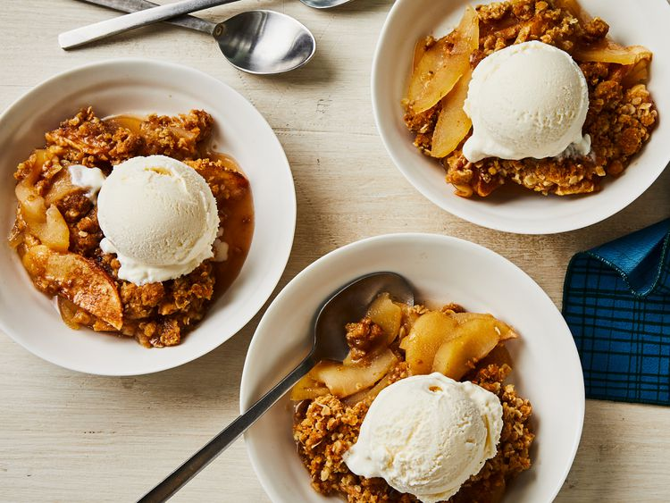

Apple Crisp

Description:
This apple crisp showcases apples at their best! The combination of warm, tender apples and the crunchy oat topping is one of my favorite desserts. Delicious with a scoop of vanilla ice cream.
Making irresistible apple crisp is surprisingly easy. You just need a good recipe — and that's where we come in! This top-rated apple crisp recipe with a sweet oat topping is sure to satisfy everyone at your table. Use whatever all-purpose apples you prefer. Sweet Honeycrisp or Fuji apples work a treat, and crisp Granny Smith apples will keep their shape perfectly.
Ingredients
- Apples: You'll need 10 cups of peeled, cored, and sliced all-purpose apples.
- Sugars: This apple crisp recipe calls for white sugar in the filling and brown sugar in the topping.
- Flour: All-purpose flour thickens the filling and gives the topping some structure.
- Cinnamon: A teaspoon of ground cinnamon lends warmth that perfectly complements the apples' flavor.
- Oats: Use quick-cooking oats for the topping.
- Leaveners: Baking soda and baking powder act as leaveners.
- Butter: Melted butter gives the topping welcome richness.
Cooking Steps
- Place the apples in a baking dish.
- Sprinkle the apples with white sugar, flour, and cinnamon.
- Drizzle water over the apples.
- Make the oat topping, then sprinkle it over the apples.
- Bake until the topping is golden brown and the apple mixture is bubbly.
back